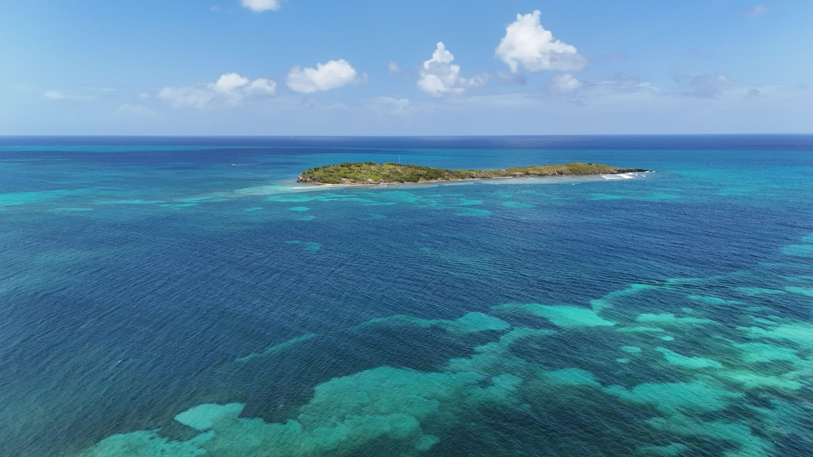
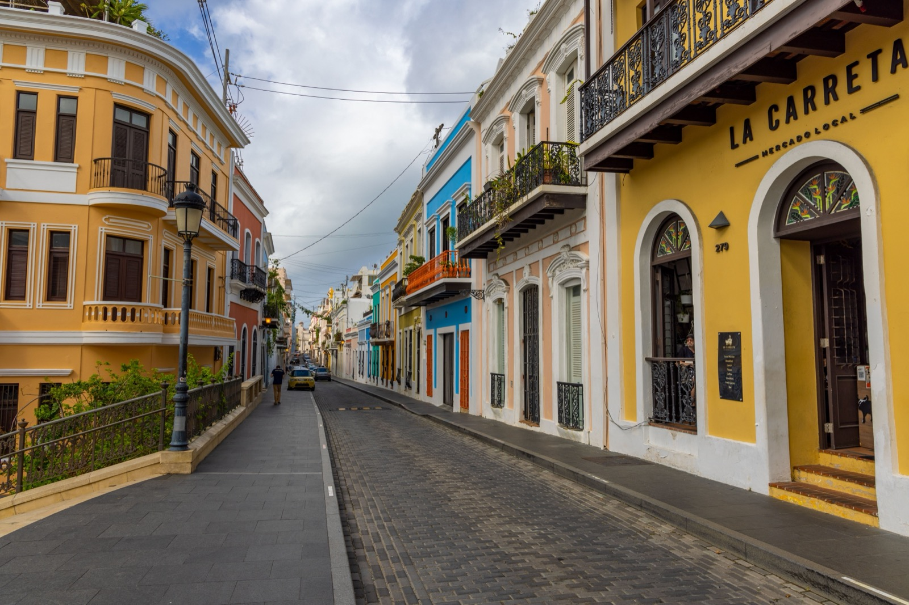
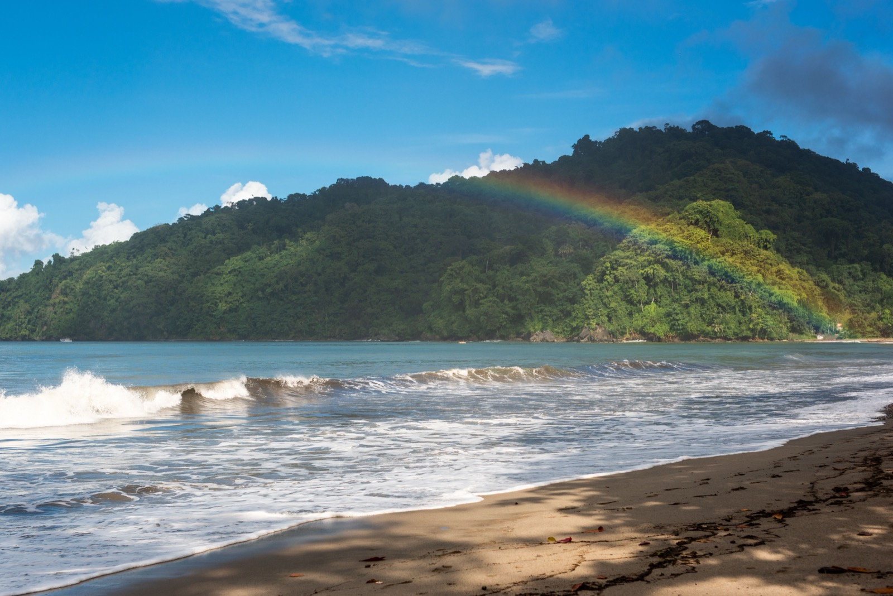
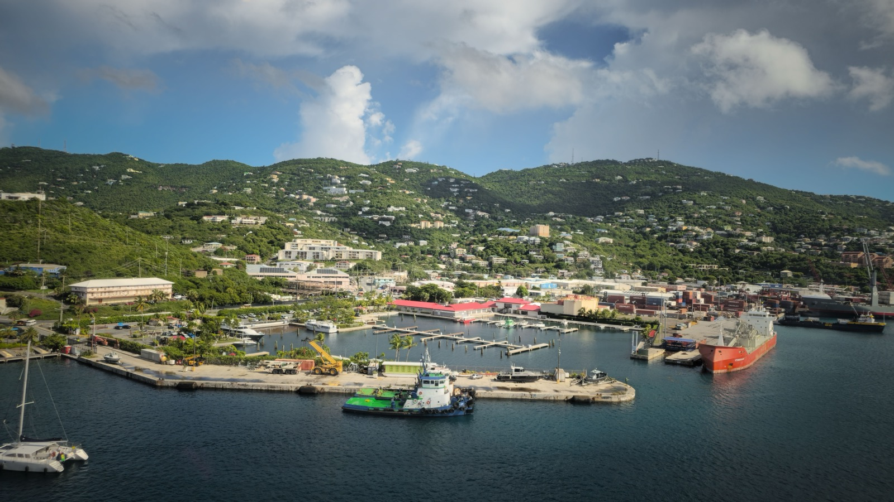

Moving to the Caribbean: The 2026 Guide to All 29 Islands
Cost of living, residency routes, safety, and healthcare for every inhabited Caribbean island — ranked by what people actually search, sorted by how you're legally allowed to stay.

Turquoise water, a warm breeze, and a life that can cost a fraction of home — the Caribbean sells the dream effortlessly. The hard part is that it isn't one place. It's twenty-nine inhabited islands, each with its own rules on who's allowed to stay, what it really costs, and how safe it feels day to day. This guide untangles all of them. Start with the in-depth island guides just below, or use the tools further down — the five residency routes, the sortable comparison of every island, and the cost-of-living chart — to narrow twenty-nine options to your shortlist.
Start here: the in-depth island guides
We're building a full relocation guide for every inhabited island. These four — the most-researched destinations — are complete, each with cost of living, residency, safety, healthcare, and where expats actually live:

No visa for US citizens — plus the famous Act 60 tax breaks that pull in high earners.
The Caribbean's lowest cost of living and a two-year path to a second passport.

English-speaking, world-famous culture, and cheaper than most of the region.

US soil in the Caribbean — no visa, the US dollar, and the EDC tax program.
The five routes that decide everything
Before any beach or budget comparison, sort the islands by the legal path to staying. Almost every Caribbean island falls into one of five buckets, and which bucket you qualify for narrows twenty-nine options down to a handful fast:
- US territories (Puerto Rico, US Virgin Islands) — US citizens move with no visa, no paperwork, keeping their citizenship. The single easiest Caribbean move for Americans.
- French departments (Martinique, Guadeloupe, St Barthélemy, and the French side of St Martin) — legally part of France and the EU, so EU citizens have full freedom of movement; non-EU citizens face the standard French/EU immigration process.
- Dutch territories (Aruba, Curaçao, Bonaire, Saba, Sint Eustatius, and Dutch Sint Maarten) — routes run through the Kingdom of the Netherlands; Dutch/EU nationals and, in some cases, US citizens under the Dutch-American Friendship Treaty have workable paths.
- British Overseas Territories (Cayman, BVI, Turks & Caicos, Anguilla, Montserrat) — residency generally via investment, work permits, or long-term physical-presence tracks. High cost of entry, very low crime.
- Independent nations — either citizenship-by-investment (St Kitts & Nevis, Dominica, Antigua, Grenada, St Lucia — pay into a fund or approved real estate, get a passport) or residency-by-income/investment (Dominican Republic, Barbados's remote-work Welcome Stamp, Bahamas real-estate residency).
Compare every inhabited island
Click any column heading to sort. Cost is a relative orientation tag ($ cheapest to $$$$ priciest); safety is a broad-strokes label — the sourced, current figures live on each island's own page as we publish them.
| Island | Pop. | Status | Language | Relocation route | Cost | Safety |
|---|---|---|---|---|---|---|
| Puerto Rico | 3.2M | US territory | Spanish/English | US territory · Act 60 tax | $$ | Variable |
| Dominican Republic | 11.5M | Sovereign | Spanish | Residency (income / invest) | $ | Variable |
| Jamaica | 2.8M | Sovereign | English | Residency / work permit | $ | Variable |
| US Virgin Islands | ~90K | US territory | English | US territory (no visa) | $$$ | Moderate |
| Bahamas · soon | 400K | Sovereign | English | Residency by real estate | $$$ | Moderate |
| Cayman Islands · soon | 76K | UK territory | English | Residency by investment / work | $$$$ | Very high |
| Aruba · soon | 108K | Netherlands | Dutch/Papiamento/English | Dutch residency route | $$ | High |
| Barbados · soon | 283K | Sovereign | English | Remote-work visa / residency | $$$ | High |
| Cuba · soon | 10.9M | Sovereign | Spanish | No standard residency | $ | Moderate |
| Curaçao · soon | 185K | Netherlands | Dutch/Papiamento/English | Dutch residency route | $$ | High |
| Saint Lucia · soon | 180K | Sovereign | English | Citizenship by investment | $$ | Moderate |
| Grenada · soon | 117K | Sovereign | English | Citizenship by investment | $ | High |
| Dominica · soon | 66K | Sovereign | English | Citizenship by investment | $ | High |
| Turks & Caicos · soon | 47K | UK territory | English | Residency by investment / work | $$$ | High |
| Antigua & Barbuda · soon | 94K | Sovereign | English | Citizenship by investment | $$ | High |
| Trinidad & Tobago · soon | 1.4M | Sovereign | English | Work permit / residency | $ | Variable |
| Sint Maarten / St-Martin · soon | 75K | Netherlands / France | English/Dutch/French | Dutch / French (EU) | $$$ | Moderate |
| Saint Kitts & Nevis · soon | 47K | Sovereign | English | Citizenship by investment (oldest) | $$$ | High |
| Haiti · soon | 11.8M | Sovereign | French/Creole | Not advised (crisis) | $ | Low |
| British Virgin Islands · soon | 40K | UK territory | English | Residency by investment / work | $$$$ | Very high |
| Bonaire · soon | 31K | Netherlands | Dutch/Papiamento/English | Dutch residency route | $$$ | Very high |
| Anguilla · soon | 15K | UK territory | English | Residency by investment | $$$$ | Very high |
| Martinique · soon | 355K | France (EU) | French | France · EU freedom | $$ | High |
| Guadeloupe · soon | 373K | France (EU) | French | France · EU freedom | $$ | High |
| Montserrat · soon | 4.4K | UK territory | English | Residency / work permit | $$ | Very high |
| St Vincent & Grenadines · soon | 100K | Sovereign | English | Residency / work permit | $$ | High |
| Saint Barthélemy · soon | 11K | France (EU) | French | France · EU freedom | $$$$ | Very high |
| Saba · soon | 2K | Netherlands | Dutch/English | Dutch residency route | $$$ | Very high |
| Sint Eustatius · soon | 3.2K | Netherlands | Dutch/English | Dutch residency route | $$$ | Very high |
How this guide is built
Islands are ordered by real relocation search demand (measured across US, UK, and Canadian search data), so the pages people actually need come first. Every island is covered, but the highest-demand destinations — Puerto Rico, the Dominican Republic, Jamaica, the US Virgin Islands — get the deepest treatment. Pages marked “soon” are in progress.
What it costs to live, compared
The single biggest swing between islands is cost of living. Here's an at-a-glance comparison of a comfortable monthly budget for one person, rent included, for the islands covered in depth so far — with the US mainland shown for reference:
Approx. monthly cost of living — single person, incl. rent (2026)
Midpoints of sourced 2026 ranges; all-in for one person including rent. US mainland shown for reference. Confirm current figures on each island's own guide page.
The cheapest, safest, and easiest — quick answers
Cheapest Caribbean islands to live
The Dominican Republic, Jamaica, Grenada, and Dominica sit at the low end of the cost spectrum, with the DR offering the most developed expat infrastructure at that price point. The most expensive are the finance-and-luxury territories: Cayman, BVI, Anguilla, and St Barthélemy.
Safest Caribbean islands to live
The small British and Dutch territories — Cayman, BVI, Bonaire, Anguilla, Saba — consistently record the lowest crime in the region, a function of tiny populations and high-income economies. Larger islands are more variable and reward careful neighborhood selection.
Easiest Caribbean residency
For US citizens, nothing beats Puerto Rico or the US Virgin Islands — there is no immigration process at all. For everyone else, the citizenship-by-investment nations (St Kitts, Dominica, Antigua, Grenada, St Lucia) offer the most predictable path to a permanent legal right to stay, typically in months rather than years.
A note on the hurricane belt
One piece of geography cuts across every route: the ABC islands (Aruba, Bonaire, Curaçao) sit south of the main hurricane track, while the Windward and Leeward islands are squarely in it. If storm risk is a deciding factor, that split matters more than any tax rate.
Thinking beyond the Caribbean?
SORA helps people relocate to and build homes across the tropics — including Panama and Costa Rica, where residency is straightforward and the cost of building is a fraction of the coastal Caribbean. If you're weighing islands against the mainland, it's worth seeing the full picture.
Frequently asked questions
What is the easiest Caribbean island to move to?
For US citizens, Puerto Rico and the US Virgin Islands are by far the easiest — they are US territories, so Americans can relocate with no visa, no work permit, and no immigration process, while keeping US citizenship. For non-US citizens, the citizenship-by-investment nations (St Kitts & Nevis, Dominica, Antigua, Grenada, St Lucia) offer the most predictable legal path, typically completed in a few months.
What is the cheapest Caribbean island to live on?
The Dominican Republic offers the best combination of low cost of living and developed expat infrastructure. Jamaica, Grenada, and Dominica are also at the affordable end. The most expensive places to live are the finance-and-luxury territories — the Cayman Islands, British Virgin Islands, Anguilla, and St Barthélemy.
Which Caribbean islands are safest?
The small British and Dutch territories — Cayman Islands, British Virgin Islands, Bonaire, Anguilla, and Saba — consistently report the lowest crime in the region. Larger islands vary widely by neighborhood, so local knowledge matters when choosing where to live.
Can Americans live in the Caribbean without giving up citizenship?
Yes. Moving to Puerto Rico or the US Virgin Islands keeps you a US citizen — they are US territories. Citizenship-by-investment programs in independent nations like St Kitts also grant a second citizenship without requiring you to renounce your existing one, since those countries permit dual nationality.
Which Caribbean islands are outside the hurricane belt?
Aruba, Bonaire, and Curaçao — the ABC islands off the coast of Venezuela — sit south of the main Atlantic hurricane track and are only rarely affected. Trinidad and Tobago is also largely below the belt. Most other Caribbean islands are within it and face annual hurricane-season risk from June to November.